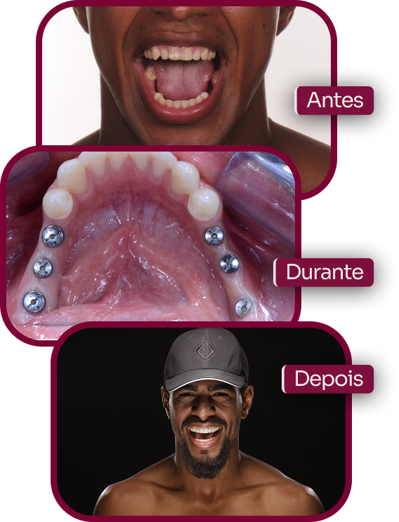
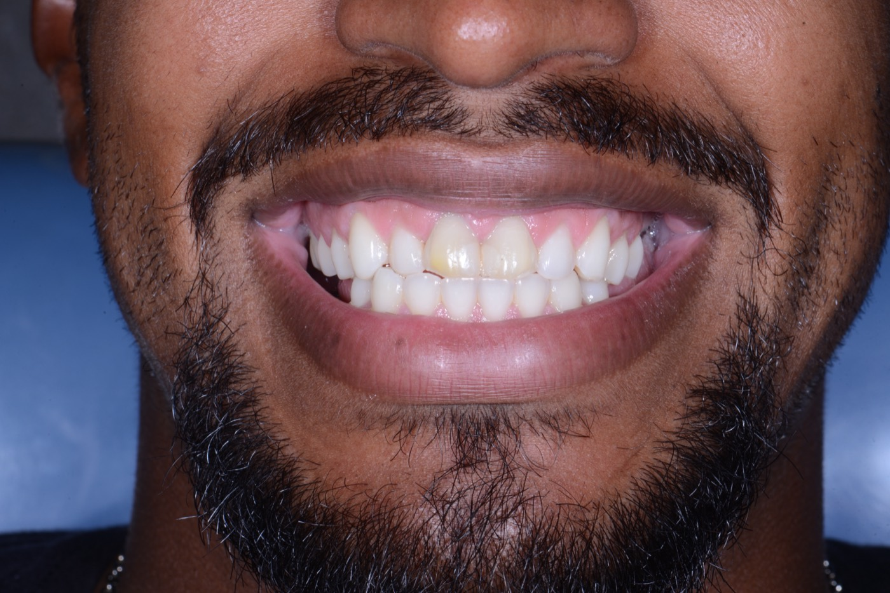
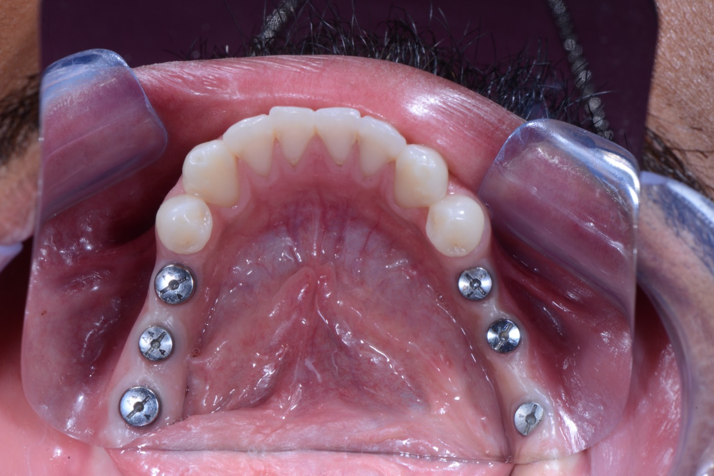
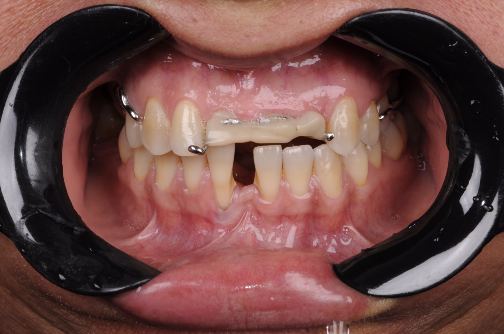
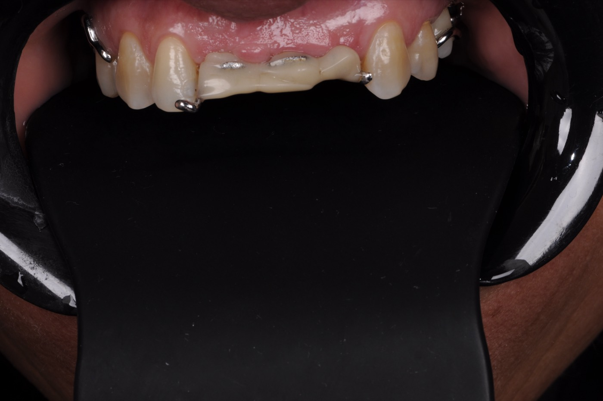
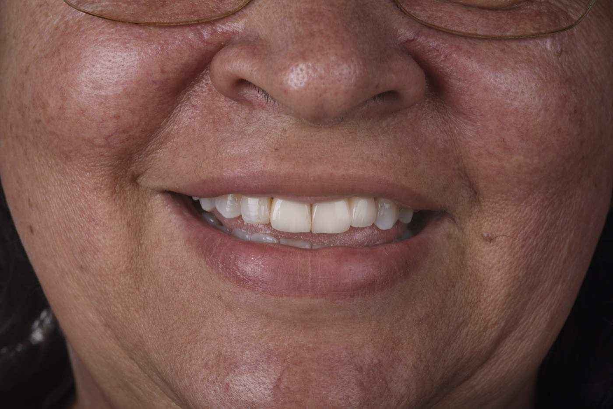
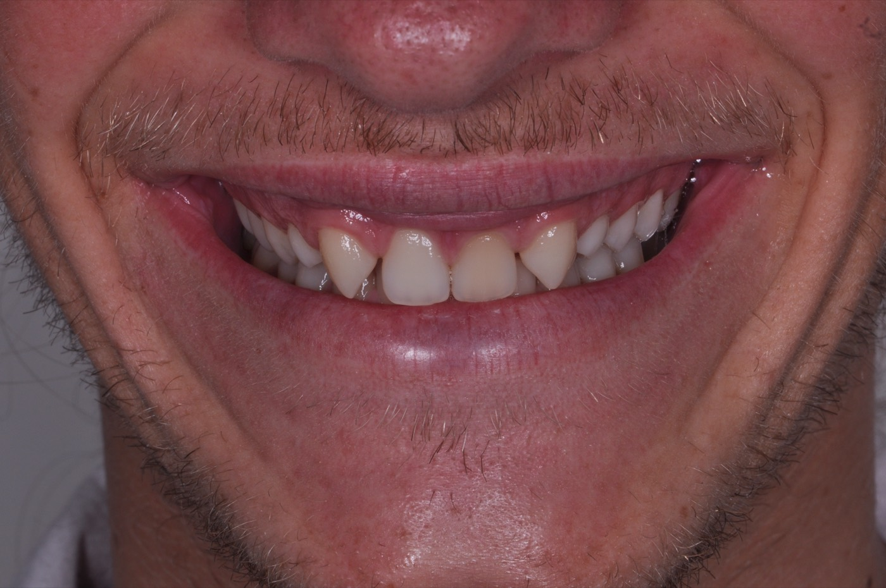
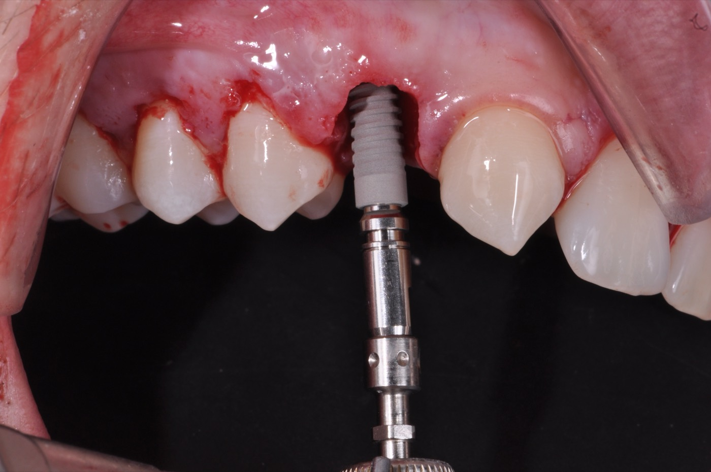
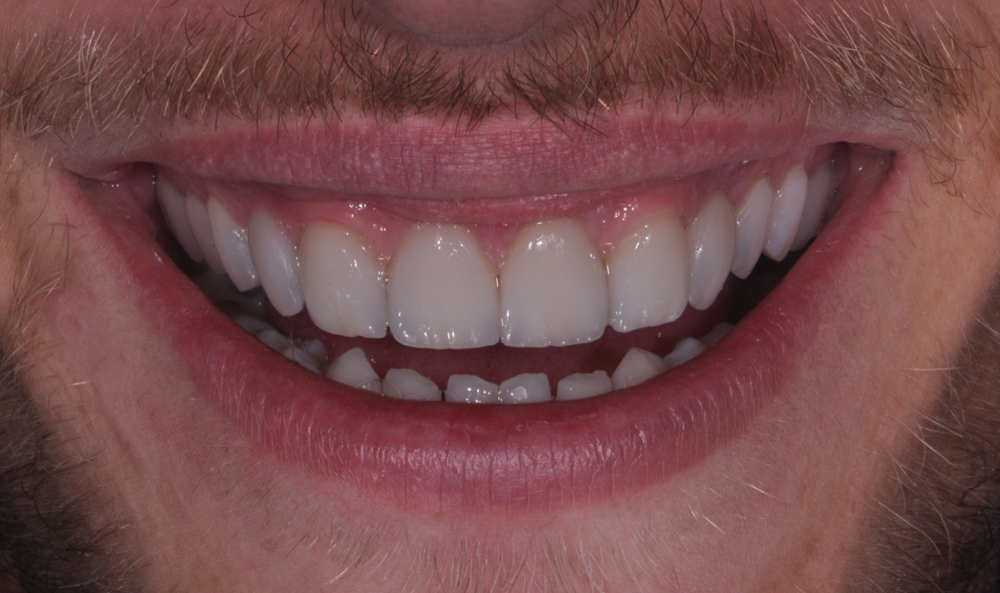
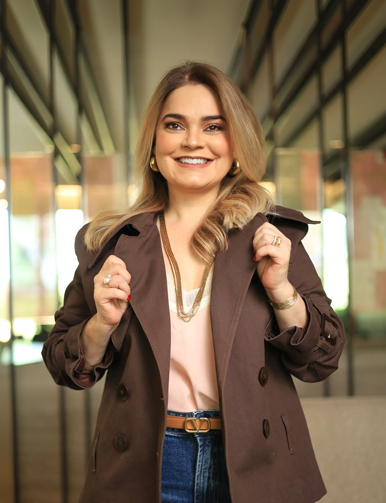

Para quem perdeu todos os dentes
A reabilitação é planejada para substituir os dentes de uma arcada de forma conjunta.
Prótese protocolo
Uma solução fixa sobre implantes para mastigar com mais firmeza.
Entenda sobre a prótese protocolo
A prótese protocolo é apoiada sobre implantes e pode ser indicada em casos de perda extensa ou total dos dentes.
A reabilitação é planejada para substituir os dentes de uma arcada de forma conjunta.
A avaliação permite entender se os dentes remanescentes podem ser mantidos ou se uma reabilitação completa pode ser considerada.
A prótese protocolo pode ser uma opção para quem busca mais estabilidade ao falar e mastigar.
Antes de indicar
Quem perdeu todos ou grande parte dos dentes, ou utiliza uma prótese removível, pode procurar uma avaliação para entender se esse tratamento é indicado.
Na avaliação, a equipe considera fatores como:
A idade, sozinha, não define se o tratamento pode ser realizado. A indicação depende das condições clínicas e dos exames de cada paciente.

Na prática
Conheça experiências de pacientes que passaram por tratamentos de reabilitação com prótese protocolo e implantes.

Antes
Durante
Antes
Durante
Depois
Antes
Durante
DepoisImagens de casos clínicos reais. Cada paciente apresenta condições diferentes, e os resultados dependem da avaliação e do planejamento individual.
Passo a passo
As etapas são definidas de acordo com as condições encontradas na avaliação.
A equipe analisa a boca, o osso, os dentes presentes e os exames necessários para planejar a reabilitação.
São definidas a posição dos implantes, o tipo de prótese e a sequência do tratamento.
Os implantes são posicionados para servir de suporte à prótese que irá reabilitar a arcada.
A etapa protética é realizada de acordo com o planejamento e a evolução da cicatrização.
Uma dúvida comum
Em alguns casos, sim. A possibilidade depende da estabilidade dos implantes, das condições do osso e do planejamento.
A fixação obtida durante a cirurgia interfere na escolha do protocolo.
Quantidade e características do osso fazem parte do planejamento.
A forma como a prótese será apoiada e utilizada também precisa ser considerada.
O histórico do paciente entra na decisão clínica.
Quando a carga imediata não é indicada, a equipe define a sequência mais adequada para preservar a cicatrização antes da prótese fixa.
Acompanhamento em todas as etapas
Prótese protocolo envolve avaliação, cirurgia, etapa protética e acompanhamento.
Quantidade e posição dos implantes, tipo de prótese e sequência do tratamento são definidos de acordo com cada paciente.
As diferentes etapas são conduzidas no mesmo local, com os profissionais envolvidos em cada fase da reabilitação.
A equipe acompanha a cicatrização, adaptação à prótese e evolução do tratamento.

Quem acompanha o seu caso
A Dra. Paula Cardoso é cirurgiã-dentista e especialista em Dentística Restauradora, CRO-GO 7676. Seu trabalho é voltado ao planejamento de reabilitações que consideram função, estética e as necessidades de cada paciente. Nos tratamentos com prótese protocolo, atua junto a uma equipe completa desde a avaliação até a reabilitação protética.
Para esclarecer
Para começar
Fale pelo WhatsApp e agende uma avaliação para conhecer as possibilidades de reabilitação com prótese fixa sobre implantes.